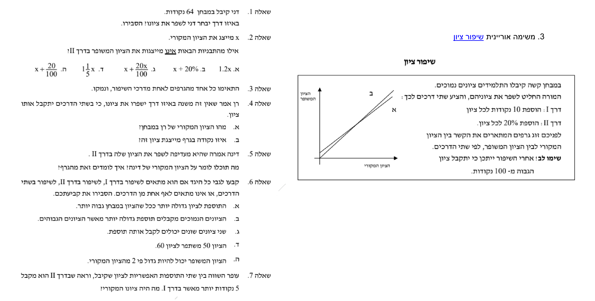

אלגברה לכיתה ח'
62
שיפור ציון
משימה אוריינית: ענו על השאלות בעזרת הנתונים שלפניכם.

יאאי-שוויונות ממעלה ראשונהאלגברה · כיתה ח' · הרכבה, פתרון ותחום פתרון משותף
1
אריאל צריך לבנות טיסנים רבים ככל האפשר ב־50 דקות. דרושות לו 5 דקות לטיסן מדגם A ו־3 דקות לטיסן מדגם B.
- א.אריאל רוצה לבנות 5 טיסנים מדגם A ו־10 מדגם B. הסבירו מדוע לא יספיק לו הזמן.
- ב.a מספר הטיסנים מדגם A ו־b מדגם B. באיזה אי־שוויון יוכל אריאל לבדוק אם יש מספיק זמן?א.a + b ≤ 50ב.a + b + 8 ≤ 50ג.3a + 5b ≤ 50ד.5a + 3b ≤ 50